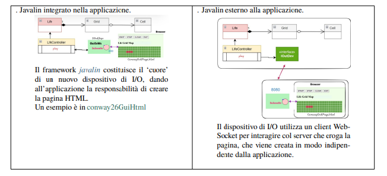

By Alexander Kreuzer
Email: Alexander.kreuzer@studio.unibo.it
GIT repo: https://github.com/Alexing-uni/ISS26_Alexander_Kreuzer
Email: Alexander.kreuzer@studio.unibo.it
GIT repo: https://github.com/Alexing-uni/ISS26_Alexander_Kreuzer
Cell, Grid, Life, IOutDev, LifeController), utilizzandola come base solida (core business) per lo sviluppo di questo nuovo incremento architetturale.
L’utente umano deve poter: - specificare la configurazione iniziale della griglia del gioco. - vedere l’evoluzione del gioco in forma opportuna aggiornata in modo automatico. - fermare e far ripartire l’evoluzione del gioco. - pulire (a gioco fermo) la configurazione della griglia del gioco. Requisiti specifici del committente per la Web GUI: 1. La pagina HTML deve relazionarsi con l'applicazione tramite un server (es. Javalin integrato o esterno). 2. Owner Pattern: Solo l'utente che apre per primo la pagina (owner) avrà i pulsanti START/STOP/CLEAN attivi. 3. Un utente "non owner" che si collega successivamente vedrà lo stato attuale aggiornato, ma in sola lettura. 4. Il deployment finale del gioco deve avvenire mediante Docker.
Il requisito di dotare il gioco di una pagina HTML proietta il sistema nel contesto dei moderni sistemi Web Client-Server. Emergono due possibili scenari architetturali:
OutInws). L'applicazione stessa ha la responsabilità di creare e servire la pagina HTML e gestire le comunicazioni Web.
Il requisito dell'Owner impone la gestione dello stato delle sessioni: la GUI mostrerà sempre i pulsanti, ma gli eventi click genereranno comandi validi solo se la sessione WebSocket corrisponde a quella del primo utente connesso.
Come suggerito dal committente, affrontiamo lo scenario Javalin esterno, in quanto propedeutico ai sistemi software distribuiti basati su microservizi.
Il sistema viene diviso in due macro-componenti che devono interagire scambiando messaggi strutturati (es. IApplMessage):
lifectrl: L'applicazione core (il motore di gioco).guiserver: Il componente che include l'I/O Javalin ed eroga la pagina Web.
Il Problema delle Connessioni (WebSocket):
Per garantire l'aggiornamento real-time (push dal server al browser senza polling continuo), adottiamo il protocollo WebSocket sulla porta 8080.
Il guiserver deve gestire nativamente molteplici contesti di connessione:
pageCtx: La connessione con il browser dell'utente (owner e viewer).lifeCtrlCtx: La connessione back-to-back con l'applicazione core.
Figura 1: Interfaccia Web di Conway erogata tramite Javalin. I controlli sono attivi solo per l'utente Owner.
Trattandosi di interazioni asincrone su pagine HTML, il collaudo automatizzato risulta complesso. Adottiamo un piano di System Testing Manuale mirato a verificare la concorrenza e il pattern Owner:
localhost:8080 (Questo assume il ruolo di Owner). Avvio il gioco.localhost:8080.
Il progetto introduce l'utilizzo di librerie esterne mediante Gradle (io.javalin:javalin). La pagina Web è strutturata in file statici (HTML, CSS, JS nativo per WebSocket) allocati nella directory src/main/resources/public. Lato server, vengono implementati gli handler HTTP (app.get) e WebSocket (app.ws) per instradare i messaggi tra i client e il LifeController.
I test unitari (JUnit/JaCoCo) del dominio sviluppati nello Sprint 1 rimangono il baluardo per la validazione della logica matematica, garantendo che l'introduzione della rete non abbia introdotto regressioni nel calcolo delle generazioni.
Come richiesto esplicitamente dal committente (Requisito 4), il deployment avviene mediante containerizzazione.
È stato creato un Dockerfile che espone la porta 8080 ed esegue l'artefatto compresso (generato tramite il task Gradle distTar), rendendo il Web Server di Conway distribuibile su qualsiasi infrastruttura cloud in modo portabile.
Questa architettura disaccoppiata (Frontend Web / Backend Java) risolve i limiti del monolite Desktop (Sprint 2) garantendo l'accesso multi-utente. La logica dei messaggi getta le basi per la successiva e naturale evoluzione del sistema verso l'uso formale dell'infrastruttura a Protoattori (unibo.basicomm23).